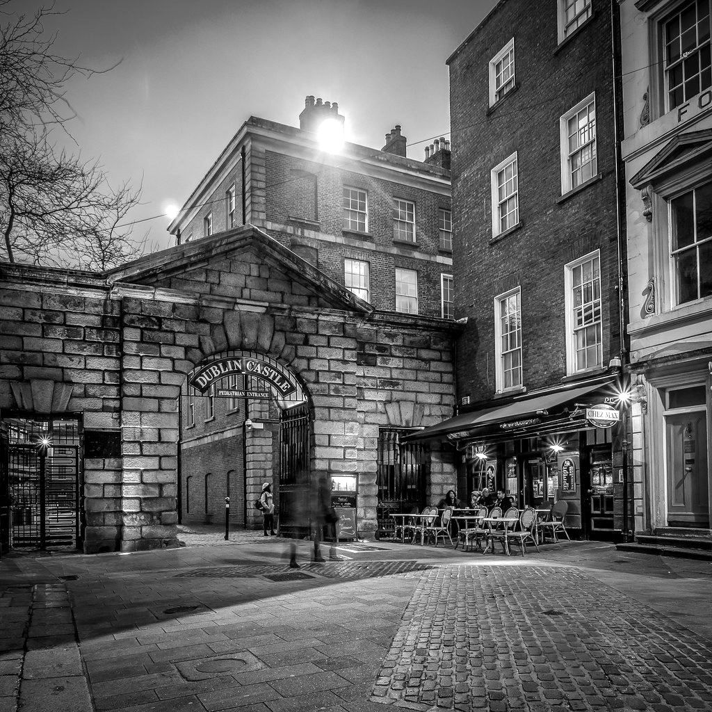
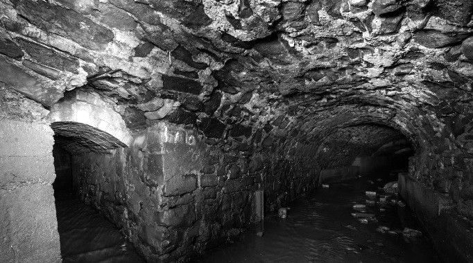
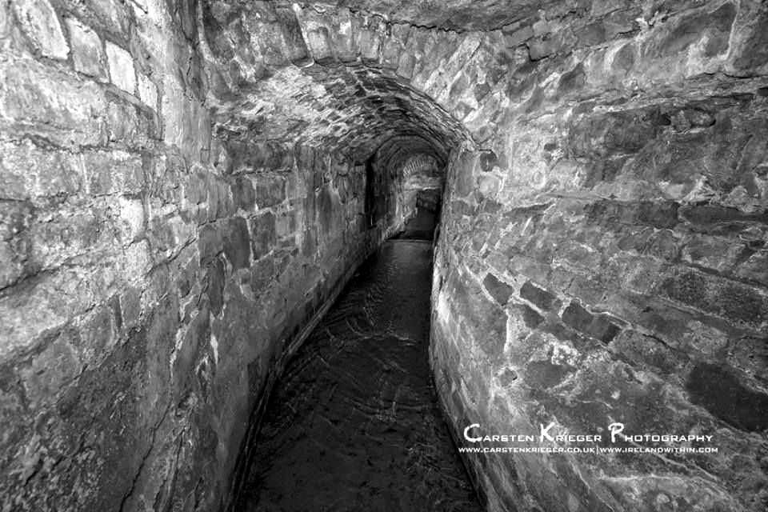

Stop 15 of 16 · Dame Street
Palace Street
Under the castle gate, Dame Street and the Olympia.
Bifurcation
Inside the gates of Dublin Castle the river divides again, with one channel heading north and the other west.
Dame Street
The river continues north under the Palace Street pedestrian gate of Dublin Castle and on to Dame Street. Dame Street takes its name from the dam on the Poddle, used both for defence and to power a mill.
The Olympia
From the castle gates the stream continues north, under Dame Street and beneath the historic Olympia Theatre.
Out of the Lower Castle Gate
The engineering report for the Ship Street development cites Clair Sweeney’s Rivers of Dublin, which says the exact historic line of the river through the city is not known, although the section through Dublin Castle is well documented.
According to that account the river ran along the city walls and the castle ramparts, around the Royal Chapel, and out at the Lower Castle Gate at Palace Street and Dame Street.
Watch and read
From the planning file
Facts from the flood scheme’s planning application and four local planning files.


